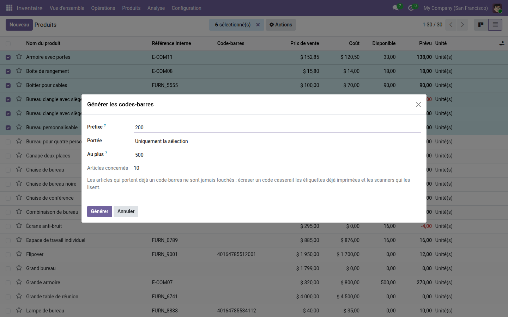
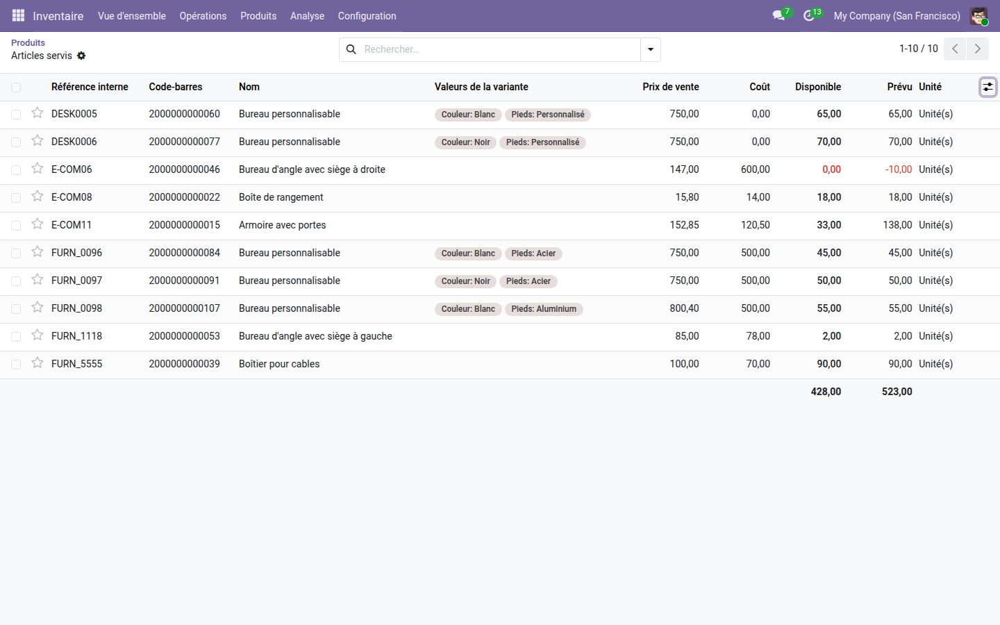

Attribuez des codes EAN13 valides à tous les articles qui n'en ont pas, d'un geste.
Odoo sait vérifier un code-barres et en calculer la clé ; il ne sait pas en produire. Un catalogue de mille références sans code se remplit donc à la main, un article après l'autre, avec les fautes de frappe que cela suppose — et un code faux ne se découvre qu'au moment où le scanner refuse l'étiquette, en réception ou en caisse.
Six articles cochés dans la liste, dix variantes concernées : le compte est annoncé avant l'action, préfixe et plafond compris. Les articles qui portent déjà un code ne figurent pas dans ce compte.

L'assistant rend la liste de ce qu'il vient d'attribuer, variante par variante : le contrôle se fait sur pièce, pas sur parole. Chaque code est un EAN13 complet, clé comprise.

Attribuer les codes est le préalable ; les faire travailler est la suite. La gamme OdooSkills couvre la lecture au code-barres des opérations d'entrepôt, le suivi par lot et numéro de série, et l'écran d'atelier au code-barres. Catalogue complet : apps.odooskills.com.
Licence LGPL-3 — compatible Odoo 19.0 Community et Enterprise. Support : support@odooskills.com.